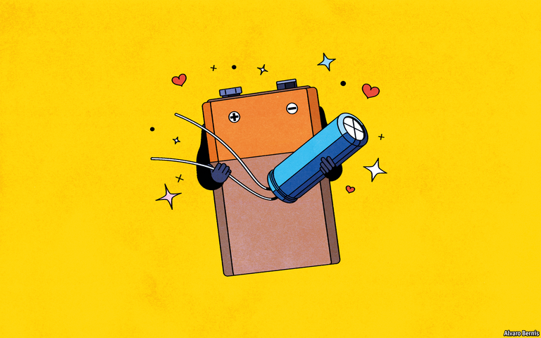
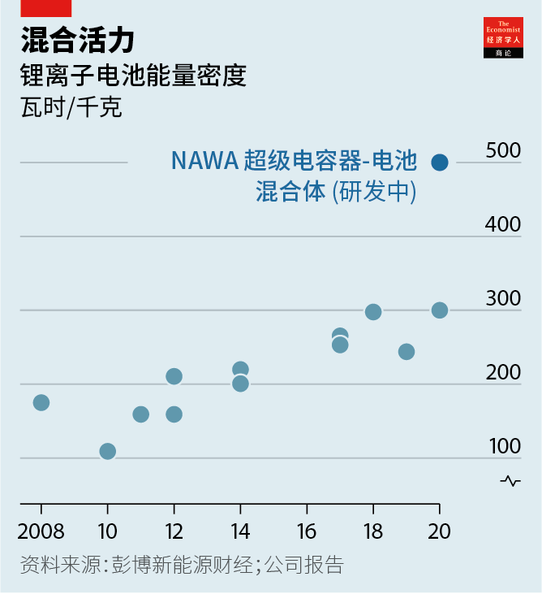
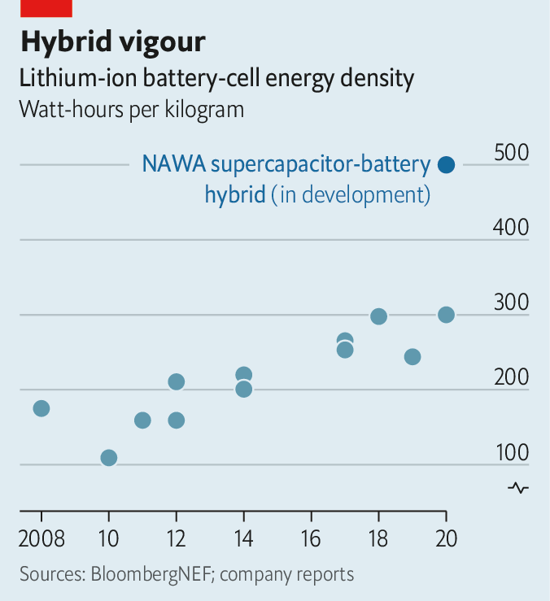

2020-11-30T16:14:35+00:00
超级电池
龟兔杂交
把超级电容器和电池混合起来或许能让顾客不再抗拒电动汽车
在加速时，一些电动汽车不仅靠电池来提供所需的功率，还依赖于第二种电源——超级电容器。电池充当马拉松运动员，长距离稳定放电。超级电容器是短跑运动员，迅速释放大量能量。
快速放电不是超级电容器带来的唯一优势。它们也能更快地充电。这让它们在再生制动系统中特别有用，因为能在汽车减速时吸收更多电。但是，它们能够存储的能量只相当于电池的一小部分，所以很快就会没电。为此，过去一段时间里工程师们尝试把超级电容器的最强项和电池最有用的功能相结合，以制造出兼具速度与耐力的蓄电设备。他们现在取得了一些进展。位于法国普罗旺斯艾克斯城附近的NAWATechnologies声称，其类似超级电容器的电池将电动汽车的续航里程提高了一倍以上，一次充电能跑1000公里。NAWA说，这种新设备还可以在短短五分钟内充满80%的电。
科学部分
电容器和电池的工作原理不同，因此要把它们结合起来有难度。电容器以物理方式通过静电储能。它放电容易且迅速，因此电容器具有很好的功率密度（单位重量的能量传输速率）。一款质量不错的现代超级电容器的功率密度可达每千克好几千瓦。
电池则是以化学方式，通过两个电极中的反应性物质储能。这些电极保持分离，但用名为“电解质”的材料连接起来。带电的原子（即“离子”）可通过电解质从一个电极抵达另一个，让化学反应得以进行。但是，只有当这种离子流被电极间的外部电路里的电子流平衡时，这种反应才会发生。这种电子流就是“电流”，也就是电池之所以存在的原因。
通过这种方式控制的化学反应需要时间，因此电池的功率密度低。电动汽车中使用的锂离子电池的功率可能仅为每千克一百瓦。但化学物质可以保持很多能量，因此电池具有很高的能量密度（单位重量容纳的能量多少）。锂离子电池每千克可存储200至300瓦时。超级电容器通常能容纳的不足10瓦时/千克。
相比之下，电容器（无论基本款还是“超级”款）由一对置于分隔材料两侧的导电极板组成。当在两块极板上施加电压时，其中一块的表面会积聚正电荷，另一块相应积聚起负电荷。和电池类似，通过外部电路连接两块极板时就会产生电流。
从基本电容器到超级电容器的飞跃涉及两件事。一是用诸如活性炭的多孔材料涂覆极板，以增加可用于存储能量的表面积。二是将它们浸泡在电解液中。电解液与极板的接触面创造了更大的存储面积。但是，将电解质添加进来还带来了一种可能性，即同时增加了一些与电池类似的电化学。爱沙尼亚的超级电容器公司骨骼科技（Skeleton Technologies）就计划这么做。
板块构造
骨骼科技已经开发出了它称之为“弯曲”的石墨烯构成的极板，用在它新系列的简单版超级电容器中。普通石墨烯是排列成六边形网格的单层碳原子，导电性非常好。骨骼科技所用的弯曲品种由许多层折皱的石墨烯组成。该公司希望，由此增加的表面积将把它的新产品的能量密度推高至10-15瓦时/千克，实现了超级电容器20-30瓦时/千克的理论极限的很大一部分。
不过，这只是骨骼科技计划的起点。该公司的工程师目前正与德国的卡尔斯鲁厄理工学院合作，在它所谓的“超级电池”（SuperBattery）中使用弯曲石墨烯。公司创新主管塞巴斯蒂安·波尔曼（Sebastian Pohlmann）说，尽管它基本上仍是一种超级电容器，以静电方式存储大部分电，但电解液也将提供一些化学储能。该公司没有透露所用的电解液和涉及的化学原理。波尔曼博士只说：“这没法与典型的锂离子化学相比。”但他声称，总体结果将是一款可在15秒内充满电并能存储60瓦时/千克的设备。公司的目标是在2023年前开始商业化生产。
其他研究团队也在探索把化学能量存储添加进超级电容器的方法。例如，奥地利的格拉茨工业大学（Graz University of Technology）的研究人员开发的版本在电触点上涂上了带细孔的碳层。一个触点的工作方式类似于电容器的极板，另一个则类似电池的电极。与骨骼科技不同，格拉茨小组公开了所使用的电解液化学。他们用的是碘化钠水溶液（即钠离子和碘离子的溶液）。在电极这一端，这种碘化物会变成元素碘，在放电过程中在小孔内结晶。当设备充电时，整个过程逆转。这时极板上的小孔会以类似的方式容纳钠离子。
据研究人员近期发表在《自然-通讯》（
由此可见，骨骼科技和格拉茨团队都采用了改进的超级电容器结构，添加了一些定制的电化学技术。相比之下，尽管NAWATechnologies的产品确实也采用改造过的超级电容器极板作为电极，但使用已被证明可靠的锂电池成分来执行乏味的化学反应。
和骨骼科技一样，NAWA本来就已经在生产超级电容器。它使用它称之为“VACNT”（垂直排列的碳纳米管）的工艺来打造其中用到的极板。管子的排列就好像一把袖珍刷子上的刷毛。非常袖珍。它每平方厘米包含约1000亿根管子，根根直立。这极大地增加了可用来存储电荷的表面积。
为了让VACNT极板也能用作类似电池的电极，NAWA的工程师缩减了这个纳米管丛林的规模，留出了一些空间来涂抹那些在电池中用来发生反应的化学物质，并方便锂离子进出管子之间的空隙。该公司估计让锂离子自由移动可使整套系统的功率密度提高十倍。
首先，这个发明的阴极（电池中的正电极）的纳米管将被镍、锰和钴涂覆，这种混合物已被广泛用于制造此类阴极。传统的阳极（负电极）本身已经是碳基的，因此以纳米管的形式使用该元素不算改动太大。不过，其他在商业上还不那么成熟的电池化学应该也能和VACNT电极一起使用。这包括锂硫和锂硅，两者都有可能增加能量密度。
硅尤其有前景，但它在吸收离子时会膨胀，而这可能导致电池爆裂。在2013年帮助创建了NAWA的物理学家帕斯卡尔·布朗热（Pascal Boulanger）说，VACNT电极中的纳米管丛林应该能像笼子那样抑制硅的膨胀。这种新的电极材料还可与固体而非液体电解质一起使用，制造出“固态”电池。它们性能强大又耐用，但目前来看很难商业化。
能量丛林
NAWA与多家未透露名字的电池公司开展了测试。布朗热博士说，VACNT电极在一款电池中的能量密度达到了500瓦时/千克，在另一款中达到1400瓦时/升。这分别是典型的锂离子电池单位重量和单位容积的两倍。“我们很容易就做到了，”他补充道，“所以我们相信还有改进空间。”
NAWA确实透露了其中一家公司是Saft。这是一家大型电池制造商，隶属于法国石油巨头道达尔（Total），而道达尔很想从化石燃料中转向多元发展。Saft的客户中有几个一级方程式车队，在其赛车中用到一些电力。Saft还与欧洲大型汽车制造商标致雪铁龙集团（PSA）合作制造电动汽车电池。
自然，这种新设备的成功将取决于其制造成本。NAWA已经在建设一条大规模生产线来为它最新款的超级电容器生产VACNT极板。首席执行官乌尔里克·格雷普（Ulrik Grape）表示，所用的工艺在一卷铝箔的两面栽种纳米管，可以很容易地转移到现有的电池生产线上，甚至可能降低电池制造的成本。他预计首批“超级电容器-电池混合体”将于2023年投产。
这种混合蓄电是否能与常规锂电池竞争尚待观察。锂电池具有成熟优势，电池制造商已在大型“超级工厂”中投入几十亿美元来大规模生产。然而，尽管电动车被热炒，对锂电池的疑虑在许多顾客心中挥之不去。对续航里程的焦虑、充电的速度，还有开销的问题都让人们在掏信用卡时犹豫不决。把超级电容器的火力和电池的耐力相结合或许至少能克服这些拖累因素的头两个，从而终于真正开启无忧无虑的电动车时代。
2020-11-30T16:14:35+00:00
Superbatteries
What do you get when you cross a hare with a tortoise?
Mixing supercapacitors and batteries may give electric cars what they need to overcome customer resistance
WHEN IT COMES to putting on pace, some electric vehicles rely not only on a battery to deliver the necessary wattage, but also on a second source of power called a supercapacitor. The battery serves as a marathon runner, providing a steady discharge over a long distance. The supercapacitor is a sprinter, unleashing a large amount of energy rapidly.
Speedy discharge is not the only advantage supercapacitors bring. They can be recharged more quickly, too. That makes them particularly useful in regenerative-braking systems, since they are able to absorb more of the electricity that is produced as a vehicle slows down. They can, though, store only a fraction of the amount of energy which a battery stuffs away. They therefore soon run out of puff. Because of this, engineers have been trying for a while to hybridise the best bits of a supercapacitor with the most useful features of a battery, to make a storage device with both speed and endurance. They are now having some success. Indeed, NAWATechnologies, near Aix-en-Provence, France, claims its supercapacitor-like battery could more than double the range of an electric car, allowing it to be driven for 1,000km on a single charge. This new device could also, NAWA says, be recharged to 80% of its capacity in as little as five minutes.
The science bit
Capacitors and batteries work in different ways, so combining them is tricky. A capacitor stores energy physically, in the form of static electricity. This is easily and rapidly discharged, so capacitors have good power density (the rate at which they transfer energy, per unit of weight). A decent modern supercapacitor has a power density of several kilowatts per kilogram.
Batteries store their energy chemically, in the form of reactive substances in their two electrodes. These electrodes are held physically apart, but are connected by a material called an electrolyte through which charged atoms, known as ions, can pass from one to the other, in order to permit a reaction to proceed. That, though, happens only when the ion flow is balanced by a flow of electrons through an external circuit between the electrodes. This electron flow is the electric current which is the reason for the battery’s existence.
Controlled in this way, chemical reactions take time, so batteries have low power density. A lithium-ion (Li-ion) battery of the sort used in electric cars might thus muster only a tenth of a kilowatt per kilogram. But chemicals can hold a lot of energy, so batteries have high energy density (the amount of energy they can contain, again per unit weight). A Li-ion battery can store 200-300 watt-hours per kilogram (Wh/kg). Supercapacitors generally manage less than 10Wh/kg.
Capacitors, by contrast—whether basic or “super”—consist of a pair of electrically conductive plates placed either side of a separator material. When a voltage is applied to these plates, a positive charge builds up on the surface of one and a corresponding negative charge on the other. Connect the plates through an external circuit and, as with a battery, a current will then flow.
Making the leap from a basic capacitor to the super variety involves two things. One is to coat the plates with a porous material such as activated carbon, to increase the surface area available for energy storage. The other is to soak them in an electrolyte. This creates yet more storage area in the form of the electrolyte’s boundary with the plates. But adding an electrolyte to the mix also brings the possibility of adding a bit of battery-like electrochemistry at the same time. And Skeleton Technologies, an Estonian supercapacitor firm, plans to do just that.
Plate tectonics
Skeleton has already developed plates composed of what it calls “curved” graphene, for a new range of straightforward supercapacitors. Ordinary graphene is a single layer of carbon atoms arranged in a hexagonal grid. It is highly conductive. Skeleton’s curved variety consists of crumpled sheets of the stuff. The consequent increase in surface area will, the firm hopes, push the energy density of its new products to 10-15Wh/kg—a good fraction of the theoretical maximum for a supercapacitor of 20-30Wh/kg.
That, though, is just the start of Skeleton’s plan. The firm’s engineers are now working with the Karlsruhe Institute of Technology, in Germany, to use curved graphene in what it calls its “SuperBattery”. Though this remains basically a supercapacitor, storing most of its charge electrostatically, the electrolyte will, says Sebastian Pohlmann, Skeleton’s head of innovation, also provide some chemical-energy storage. The company is keeping mum about the electrolyte it uses and the chemistry involved. “It is not comparable to the classic lithium-ion chemistry,” is all that Dr Pohlmann will say. But the overall consequence, he claims, will be something that is rechargeable within 15 seconds and has the ability to store 60Wh/kg. Skeleton aims to start producing this commercially by 2023.
Other groups, too, are working on ways to add chemical-energy storage to a supercapacitor. Researchers at Graz University of Technology in Austria, for example, have developed a version that has its electrical contacts coated with carbon which is pierced by tiny pores. One contact operates like a capacitor plate, the other like a battery electrode. Unlike Skeleton, the Graz group are open about their approach to electrolyte chemistry. They are using aqueous sodium iodide (ie, a solution of sodium ions and iodine ions). At the electrode, the iodide turn into elemental iodine, which crystallises within the pores during discharge. This process then reverses itself when the device is charging. The pores in the plate serve to accommodate sodium ions similarly.
According to a paper its inventors published recently in
Both Skeleton and the Graz group, then, are taking modified supercapacitor architecture and adding some bespoke electrochemistry. By contrast, although the offering from NAWATechnologies does indeed also employ modified supercapacitor plates as its electrodes, it uses tried and trusted Li-ion ingredients for the chemical donkey work.
Like Skeleton, NAWA already manufactures supercapacitors. The plates for these are created using a process which the firm calls VACNT (vertically aligned carbon nanotubes). This arranges those tubes in an array that resembles, in miniature, the bristles on a brush. Extreme miniature. A square centimetre contains about 100bn of them, all standing to attention. That greatly increases the surface area available to hold an electric charge.
To adapt VACNT plates to operate also as battery-like electrodes, NAWA’s engineers have thinned the nanotube forest to make room for coatings of the chemicals which batteries employ for their reactions, and also for the movement of lithium ions into and out of the spaces between the tubes. This freedom of movement, the company reckons, will boost the arrangement’s power density by a factor of ten.
To start with, the nanotubes of the invention’s cathode (the positive electrode in a battery) will be coated with nickel, manganese and cobalt, a mixture already widely used to make such cathodes. Conventional anodes (the negative electrodes) are already carbon based, so using that element in the form of nanotubes is not a big departure. Other, less commercially developed battery chemistries should, though, also work with VACNT electrodes. These include lithium-sulphur and lithium-silicon, both of which have the potential to increase energy densities.
Silicon is particularly promising, but it swells as it absorbs ions, and that can rupture a battery. The thicket of nanotubes in a VACNT electrode should operate like a cage to keep the silicon in check, says Pascal Boulanger, a physicist who helped found NAWA in 2013. The new electrode material could also be used with solid rather than liquid electrolytes, to make “solid-state” batteries. These are powerful and robust, but are proving tricky to commercialise.
Bristling to work
In tests with a number of unnamed battery companies, Dr Boulanger says VACNT electrodes achieved an energy density of 500Wh/kg in one battery and up to 1,400 watt-hours per litre in another. This is roughly double what a typical Li-ion battery can manage in terms of weight and volume respectively. “We have done that very easily,” he adds, “so we believe there is more room for improvement.”
One firm that NAWA does admit to working with is Saft, a large batterymaker owned by Total, a French oil giant keen to diversify from fossil fuels. Among Saft’s customers are several Formula 1 teams which use some electric power in their racing cars. Saft has also teamed up with PSA group, a big European carmaker, to manufacture batteries for electric vehicles.
Naturally, the new device’s success will depend on the cost of manufacturing it. NAWA is already constructing a mass-production line to make VACNT plates for its latest supercapacitors. The process used, which grows nanotubes on both sides of a roll of aluminium foil, would, says Ulrik Grape, NAWA’s chief executive, transfer easily to an existing battery-production line and might even reduce battery-making costs. He expects the first versions of the supercapacitor-battery hybrids to be in production by 2023.
Whether such hybrid storage will be able to compete with conventional Li-ions remains to be seen. Li-ion batteries have the advantage of incumbency, and batterymakers have invested billions of dollars in huge “gigafactories” to turn them out in droves. Yet, for all the hype surrounding electric cars, doubts about Li-ions linger in many customers’ minds. Range-anxiety, recharge rate and cost all combine to induce a hesitation to reach for the credit card. Mixing the spice of a supercapacitor with the stamina of a battery might overcome at least the first two of these objections, and thus, at last, truly launch an era of carefree electric motoring.■
2020-11-30T16:14:35+00:00
超級電池
龜兔雜交
把超級電容器和電池混合起來或許能讓顧客不再抗拒電動汽車
在加速時，一些電動汽車不僅靠電池來提供所需的功率，還依賴於第二種電源——超級電容器。電池充當馬拉松運動員，長距離穩定放電。超級電容器是短跑運動員，迅速釋放大量能量。
快速放電不是超級電容器帶來的唯一優勢。它們也能更快地充電。這讓它們在再生制動系統中特別有用，因為能在汽車減速時吸收更多電。但是，它們能夠存儲的能量只相當於電池的一小部分，所以很快就會沒電。為此，過去一段時間裡工程師們嘗試把超級電容器的最強項和電池最有用的功能相結合，以製造出兼具速度與耐力的蓄電設備。他們現在取得了一些進展。位於法國普羅旺斯艾克斯城附近的NAWATechnologies聲稱，其類似超級電容器的電池將電動汽車的續航里程提高了一倍以上，一次充電能跑1000公里。NAWA說，這種新設備還可以在短短五分鐘內充滿80%的電。
科學部分
電容器和電池的工作原理不同，因此要把它們結合起來有難度。電容器以物理方式通過靜電儲能。它放電容易且迅速，因此電容器具有很好的功率密度（單位重量的能量傳輸速率）。一款質量不錯的現代超級電容器的功率密度可達每千克好幾千瓦。
電池則是以化學方式，通過兩個電極中的反應性物質儲能。這些電極保持分離，但用名為“電解質”的材料連接起來。帶電的原子（即“離子”）可通過電解質從一個電極抵達另一個，讓化學反應得以進行。但是，只有當這種離子流被電極間的外部電路里的電子流平衡時，這種反應才會發生。這種電子流就是“電流”，也就是電池之所以存在的原因。
通過這種方式控制的化學反應需要時間，因此電池的功率密度低。電動汽車中使用的鋰離子電池的功率可能僅為每千克一百瓦。但化學物質可以保持很多能量，因此電池具有很高的能量密度（單位重量容納的能量多少）。鋰離子電池每千克可存儲200至300瓦時。超級電容器通常能容納的不足10瓦時/千克。
相比之下，電容器（無論基本款還是“超級”款）由一對置於分隔材料兩側的導電極板組成。當在兩塊極板上施加電壓時，其中一塊的表面會積聚正電荷，另一塊相應積聚起負電荷。和電池類似，通過外部電路連接兩塊極板時就會產生電流。
從基本電容器到超級電容器的飛躍涉及兩件事。一是用諸如活性炭的多孔材料塗覆極板，以增加可用於存儲能量的表面積。二是將它們浸泡在電解液中。電解液與極板的接觸面創造了更大的存儲面積。但是，將電解質添加進來還帶來了一種可能性，即同時增加了一些與電池類似的電化學。愛沙尼亞的超級電容器公司骨骼科技（Skeleton Technologies）就計劃這麼做。
板塊構造
骨骼科技已經開發出了它稱之為“彎曲”的石墨烯構成的極板，用在它新系列的簡單版超級電容器中。普通石墨烯是排列成六邊形網格的單層碳原子，導電性非常好。骨骼科技所用的彎曲品種由許多層折皺的石墨烯組成。該公司希望，由此增加的表面積將把它的新產品的能量密度推高至10-15瓦時/千克，實現了超級電容器20-30瓦時/千克的理論極限的很大一部分。
不過，這只是骨骼科技計劃的起點。該公司的工程師目前正與德國的卡爾斯魯厄理工學院合作，在它所謂的“超級電池”（SuperBattery）中使用彎曲石墨烯。公司創新主管塞巴斯蒂安·波爾曼（Sebastian Pohlmann）說，儘管它基本上仍是一種超級電容器，以靜電方式存儲大部分電，但電解液也將提供一些化學儲能。該公司沒有透露所用的電解液和涉及的化學原理。波爾曼博士只說：“這沒法與典型的鋰離子化學相比。”但他聲稱，總體結果將是一款可在15秒內充滿電並能存儲60瓦時/千克的設備。公司的目標是在2023年前開始商業化生產。
其他研究團隊也在探索把化學能量存儲添加進超級電容器的方法。例如，奧地利的格拉茨工業大學（Graz University of Technology）的研究人員開發的版本在電觸點上塗上了帶細孔的碳層。一個觸點的工作方式類似於電容器的極板，另一個則類似電池的電極。與骨骼科技不同，格拉茨小組公開了所使用的電解液化學。他們用的是碘化鈉水溶液（即鈉離子和碘離子的溶液）。在電極這一端，這種碘化物會變成元素碘，在放電過程中在小孔內結晶。當設備充電時，整個過程逆轉。這時極板上的小孔會以類似的方式容納鈉離子。
據研究人員近期發表在《自然-通訊》（
由此可見，骨骼科技和格拉茨團隊都採用了改進的超級電容器結構，添加了一些定製的電化學技術。相比之下，儘管NAWATechnologies的產品確實也採用改造過的超級電容器極板作為電極，但使用已被證明可靠的鋰電池成分來執行乏味的化學反應。
和骨骼科技一樣，NAWA本來就已經在生產超級電容器。它使用它稱之為“VACNT”（垂直排列的碳納米管）的工藝來打造其中用到的極板。管子的排列就好像一把袖珍刷子上的刷毛。非常袖珍。它每平方厘米包含約1000億根管子，根根直立。這極大地增加了可用來存儲電荷的表面積。
為了讓VACNT極板也能用作類似電池的電極，NAWA的工程師縮減了這個納米管叢林的規模，留出了一些空間來塗抹那些在電池中用來發生反應的化學物質，並方便鋰離子進出管子之間的空隙。該公司估計讓鋰離子自由移動可使整套系統的功率密度提高十倍。
首先，這個發明的陰極（電池中的正電極）的納米管將被鎳、錳和鈷塗覆，這種混合物已被廣泛用於製造此類陰極。傳統的陽極（負電極）本身已經是碳基的，因此以納米管的形式使用該元素不算改動太大。不過，其他在商業上還不那麼成熟的電池化學應該也能和VACNT電極一起使用。這包括鋰硫和鋰硅，兩者都有可能增加能量密度。
硅尤其有前景，但它在吸收離子時會膨脹，而這可能導致電池爆裂。在2013年幫助創建了NAWA的物理學家帕斯卡爾·布朗熱（Pascal Boulanger）說，VACNT電極中的納米管叢林應該能像籠子那樣抑制硅的膨脹。這種新的電極材料還可與固體而非液體電解質一起使用，製造出“固態”電池。它們性能強大又耐用，但目前來看很難商業化。
能量叢林
NAWA與多家未透露名字的電池公司開展了測試。布朗熱博士說，VACNT電極在一款電池中的能量密度達到了500瓦時/千克，在另一款中達到1400瓦時/升。這分別是典型的鋰離子電池單位重量和單位容積的兩倍。“我們很容易就做到了，”他補充道，“所以我們相信還有改進空間。”
NAWA確實透露了其中一家公司是Saft。這是一家大型電池製造商，隸屬於法國石油巨頭道達爾（Total），而道達爾很想從化石燃料中轉向多元發展。Saft的客戶中有幾個一級方程式車隊，在其賽車中用到一些電力。Saft還與歐洲大型汽車製造商標緻雪鐵龍集團（PSA）合作製造電動汽車電池。
自然，這種新設備的成功將取決於其製造成本。NAWA已經在建設一條大規模生產線來為它最新款的超級電容器生產VACNT極板。首席執行官烏爾里克·格雷普（Ulrik Grape）表示，所用的工藝在一卷鋁箔的兩面栽種納米管，可以很容易地轉移到現有的電池生產線上，甚至可能降低電池製造的成本。他預計首批“超級電容器-電池混合體”將於2023年投產。
這種混合蓄電是否能與常規鋰電池競爭尚待觀察。鋰電池具有成熟優勢，電池製造商已在大型“超級工廠”中投入幾十億美元來大規模生產。然而，儘管電動車被熱炒，對鋰電池的疑慮在許多顧客心中揮之不去。對續航里程的焦慮、充電的速度，還有開銷的問題都讓人們在掏信用卡時猶豫不決。把超級電容器的火力和電池的耐力相結合或許至少能克服這些拖累因素的頭兩個，從而終於真正開啟無憂無慮的電動車時代。